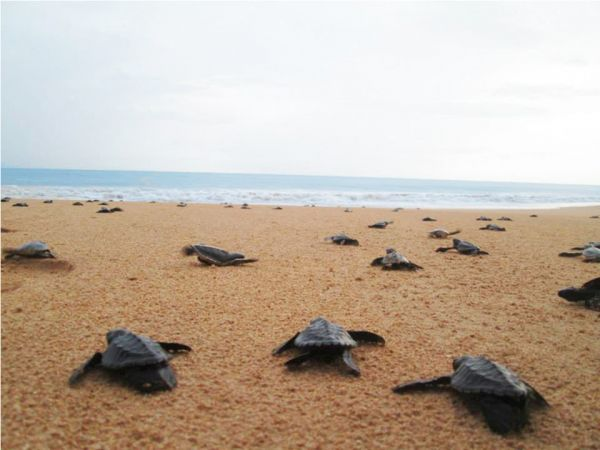
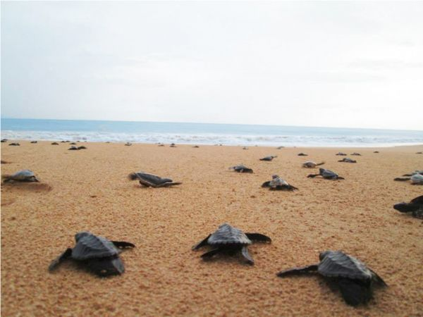

The initiative was started by Dudley Perera in 1988. The project's primary goals are to keep an eye on local sea turtle behavior and protect nearby nesting areas. The project's nursery is one of its most vital components. Before being released into the water, saved and gathered eggs can securely hatch within the project's sanctuary away from scavengers. Additionally, a specific amount of each birth is withheld for a brief time for "head starting" prior to release. The goal of the nursery program is to increase the number of hatchlings that make it to the ocean and endure the perilous early phases of life. From each group, only a few hatchlings will ever reach maturity. The longevity of the species depends on every nesting site, every egg, every hatchling, and every turtle. Sea turtles unfortunately experience a lot of threats.
The project's nursery is one of its most vital components. Before being released into the water, saved and gathered eggs can securely hatch within the project's sanctuary away from scavengers. Additionally, a specific amount of each birth is withheld for a brief time for "head starting" prior to release. The goal of the nursery program is to increase the number of hatchlings that make it to the ocean and endure the perilous early phases of life. From each group, only a few hatchlings will ever reach maturity. The longevity of the species depends on every nesting site, every egg, every hatchling, and every turtle. Sea turtles unfortunately experience a lot of threats. infant tortoise Eggs are reburied in the hatchery where they can hatch safely after being taken from nests on the seashore or even purchased from thieves to avoid selling them in the markets. Hatchlings should never be released during the daylight, so the majority are released as soon as possible at night. However, some are held back for a brief time to give them a "head start" until they are stronger
Volunteers that help run the project and/or work on neighborhood community development intiatives gain useful experience working on community projects, learning about Sri Lanka, the local community, turtle conservation, and much more in exchange! Placements with the project start at one week and last for twelve weeks. The KSTCP offers a highly practical experience for volunteers, including beach conservation work, upkeep of the turtle hatchery, feeding and cleaning of turtles, and even giving tours of the projects to residents and tourists. There is a lot to learn about Sri Lanka and turtles, but you wont foget it easily. The weekedns are free for volunteers. Volunteers can use their leisure time to travel to popular destinations including Kandy, Sigiriya, Dambulla, Anuradhapura, Ella, Nuwara Eliya, Mirissa, Galle and Yala. These excursions may be planned through the Project with local guides
 

To know more and find more information click here